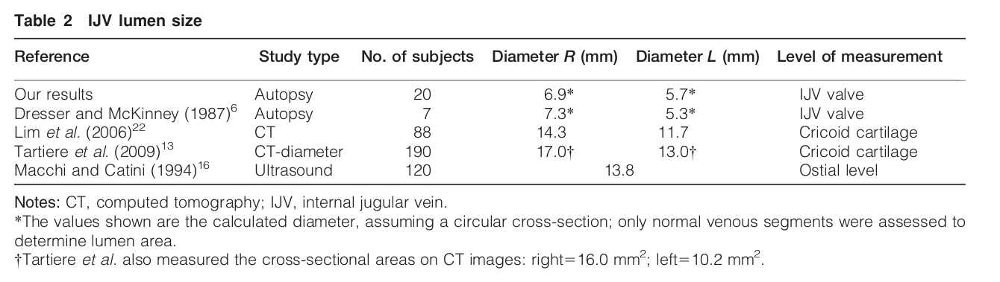

|
../../cm-ucl/corpus-oa-pmr-v02/10.1179_1743132812Y.0000000071/tables/table1/table.png
|
| Scalpel handle (No.3) and blade (No. 10) Bone saw (for opening the chest cavity) Chest retractor Wheatlander retractors for exposure of subclavian veins Plastic tubing (outer diameter: 7.9–12.7 mm) Hemostats (5), forceps, scissors Plastic cable ties 60-ml syringes (2) Suction device Teaspoon measure 125 ml screw cap specimen cup 250 ml or larger bowl Tongue depressors or other instrument to mix silicone reagents Corkboard Push pins 10% neutral-buffered formalin Container to store specimen Ruler Digital camera Probes to demonstrate valves and other luminal structures |
../../cm-ucl/corpus-oa-pmr-v02/10.1179_1743132812Y.0000000071/tables/table1/table.svg.html
|
|

../../cm-ucl/corpus-oa-pmr-v02/10.1179_1743132812Y.0000000071/tables/table2/table.png
|
| Reference |
Study type |
No. of subjects |
Diameter R (mm) |
Diameter L (mm) |
Level of measurement |
| Our results |
Autopsy |
20 |
6.9* |
|
5.7* |
IJV valve |
| Dresser and McKinney (1987)^{6} |
Autopsy |
7 |
7.3* |
|
5.3* |
IJV valve |
| Lim et al. (2006)^{22} |
CT |
88 |
14.3 |
|
11.7 |
Cricoid cartilage |
| Tartiere et al. (2009)^{13} |
CT-diameter |
190 |
17.0❾ char: 123; name: braceleft; f: AdvPi1; fn: MFKOIG+AdvPi1; e: WinAnsi |
|
13.0❾ char: 123; name: braceleft; f: AdvPi1; fn: MFKOIG+AdvPi1; e: WinAnsi |
Cricoid cartilage |
| Macchi and Catini (1994)^{16} |
Ultrasound |
120 |
|
13.8 |
|
Ostial level |
../../cm-ucl/corpus-oa-pmr-v02/10.1179_1743132812Y.0000000071/tables/table2/table.svg.html
|

../../cm-ucl/corpus-oa-pmr-v02/10.1179_1743132812Y.0000000071/tables/table3/table.png
|
| Reference |
Study type |
No. of subjects |
% bilateral valves |
% unilateral valves (right; left) |
% absent valves |
| Our results |
Autopsy |
20* |
85% |
15% (5%; 10%) |
0% |
| Dresser and McKinney (1987)^{6} |
Autopsy |
7 |
100% |
0% |
0% |
| Silva et al. (2002)^{8} |
Autopsy |
30 |
100% |
0% |
0% |
| Lepori et al. (1999)^{15} |
Autopsy |
75 |
84% |
9.3% (6.7%; 2.7%) |
6.7% |
| Lepori et al. (1999)^{15} |
Ultrasound |
75 |
60% |
26.7% (21.3%; 5.3%) |
13.3% |
| Akkawi et al. (2002)^{7} |
Ultrasound |
125 |
85.6% |
11.2% (9.6%; 1.6%) |
3.2% |
| Macchi and Catini (1994)^{16} |
Ultrasound |
120 |
71.7% |
28.3% |
0% |
../../cm-ucl/corpus-oa-pmr-v02/10.1179_1743132812Y.0000000071/tables/table3/table.svg.html
|
|
../../cm-ucl/corpus-oa-pmr-v02/10.1179_1743132812Y.0000000071/tables/table4/table.png
|
| Study type |
No. of valves |
% bicuspid |
% tricuspid |
% unicuspid |
| Our results |
Autopsy |
37* |
78.4% |
16.2% |
5.4% |
| Dresser and McKinney (1987)^{6} |
Autopsy |
14 |
71.4% |
28.6% |
0% |
| Silva et al. (2002)^{8} |
Autopsy |
60 |
93% |
2% |
5% |
| Lepori et al. (1999)^{15} |
Autopsy |
133 |
98.5% |
0.8% |
0.8% |
| Lepori et al. (1999)^{15} |
Ultrasound |
110 |
38.2% |
|
|
| Akkawi et al. (2002)^{7} |
Ultrasound |
228 |
99.1% |
0% |
0.9% |
| Macchi and Catini (1994)^{16} |
Ultrasound |
206 |
75% |
10% |
15% |
../../cm-ucl/corpus-oa-pmr-v02/10.1179_1743132812Y.0000000071/tables/table4/table.svg.html
|

../../cm-ucl/corpus-oa-pmr-v02/10.1179_1743132812Y.0000000071/tables/table5/table.png
|
| Study type |
No. of AZY veins |
% with valves |
Average distance from SVC junction |
| Our results |
Autopsy |
20* |
65% |
3.6 cm (1.6–7.0 cm) |
| Yeh et al. (2004)^{17} |
CT |
154 |
68.2% |
1.9 cm (0.5–4.0 cm) |
| Ichikawa et al. (2008)^{19} |
CT |
194 |
53% |
|
| Steinke and Moghaddam (2009)^{18} |
CT |
191 |
64.9% |
|
../../cm-ucl/corpus-oa-pmr-v02/10.1179_1743132812Y.0000000071/tables/table5/table.svg.html
|